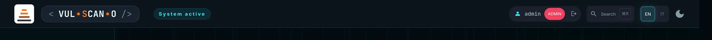
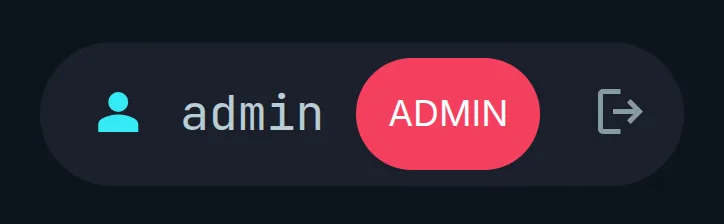
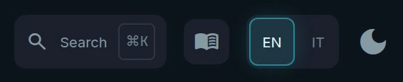
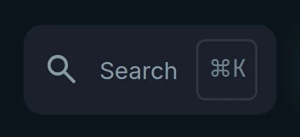
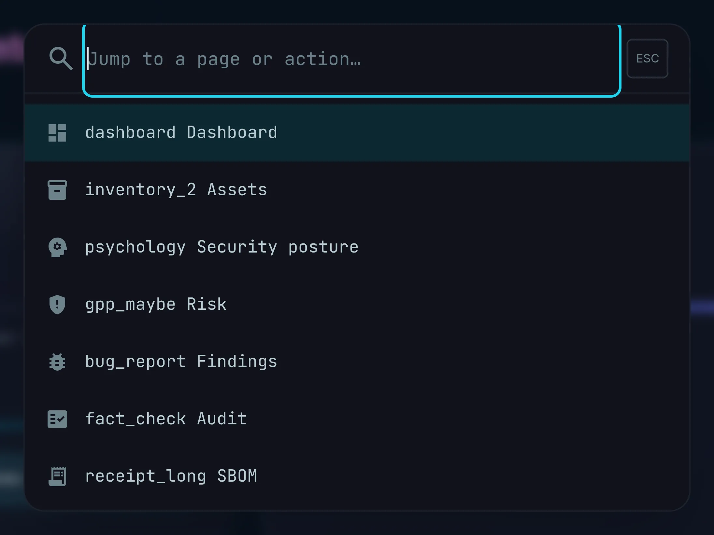
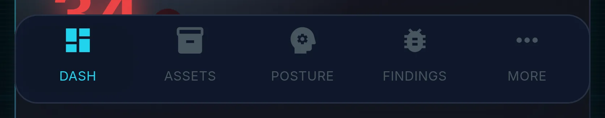
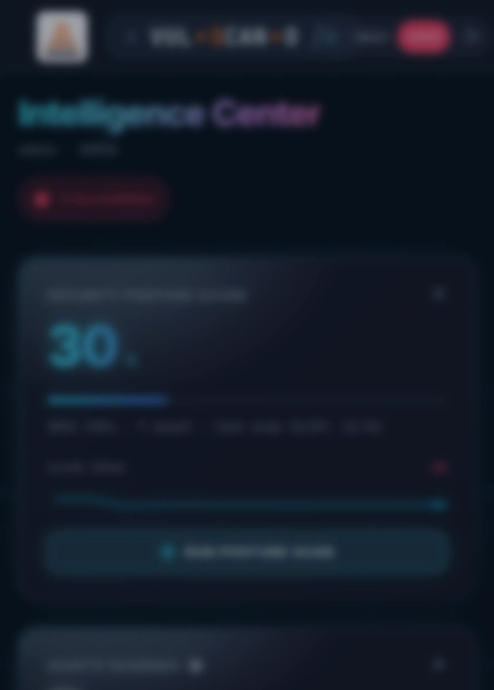

The application shellL'interfaccia comune
The top app bar, the navigation drawer, the mobile dock and the command palette are shared by every authenticated page. Learning them once saves a click on every screen — and explains why some pages simply do not exist for some roles.
La barra superiore, il drawer di navigazione, la dock mobile e la command palette sono condivisi da tutte le pagine autenticate. Impararli una volta fa risparmiare un clic su ogni schermata — e spiega perché alcune pagine semplicemente non esistono per certi ruoli.
Page OverviewPanoramica
Every authenticated page is built from the same three fixed regions: a top bar 64 px high pinned to the window, a 256 px navigation drawer on the left (desktop only, from 768 px up), and the scrollable content area. Below 768 px the drawer is replaced by a floating bottom dock. Nothing in the shell scrolls away, so the current identity, the search entry point and the destinations are always one glance away.
Ogni pagina autenticata è costruita sulle stesse tre regioni fisse: una barra superiore alta 64 px ancorata alla finestra, un drawer di navigazione da 256 px a sinistra (solo desktop, da 768 px in su) e l'area di contenuto scorrevole. Sotto i 768 px il drawer è sostituito da una dock inferiore flottante. Nessun elemento della shell scorre via: identità corrente, punto di ingresso della ricerca e destinazioni sono sempre a colpo d'occhio.
The shell is also where the security model becomes visible: it calls GET /api/me once per page
load and hides the destinations your role cannot open. That is a convenience, not the defence — every endpoint
re-checks authorization server-side.
La shell è anche il punto in cui il modello di sicurezza diventa visibile: chiama GET /api/me una
volta per caricamento pagina e nasconde le destinazioni che il tuo ruolo non può aprire. È una comodità, non
la difesa: ogni endpoint ricontrolla l'autorizzazione lato server.
Top app barBarra superiore

Features BreakdownDettaglio funzionalità
1Logo, wordmark and breadcrumbLogo, wordmark e breadcrumb
The animated mark on the far left is a link back to the Dashboard on some pages and decorative on others; an
h1 containing the application name is present but visually hidden, so screen readers announce the
product on every page. Next to it the breadcrumb shows Home › Current page; every crumb except the
last is a link, and the last carries aria-current="page". On the Dashboard the breadcrumb is
replaced by a cyan status chip reading System active. The breadcrumb is hidden below
768 px to leave room for the controls on the right.
Il marchio animato all'estrema sinistra è un link alla Dashboard su alcune pagine e decorativo su altre; è
presente un h1 con il nome dell'applicazione, visivamente nascosto, così gli screen reader
annunciano il prodotto su ogni pagina. Accanto, il breadcrumb mostra Home › Pagina corrente: tutte le
voci tranne l'ultima sono link e l'ultima porta aria-current="page". Sulla Dashboard il breadcrumb
è sostituito da un chip di stato ciano con scritto System active. Il breadcrumb è nascosto
sotto i 768 px per lasciare spazio ai controlli di destra.
2User chip and logoutChip utente e logout

Populated from GET /api/me, which returns username, role and the
must_change_password flag. The pill is colour-coded so you can tell at a glance which visibility
cone you are working inside — this matters when you are testing what an editor can actually see:
Popolato da GET /api/me, che restituisce username, role e il flag
must_change_password. La pillola è codificata a colori così capisci a colpo d'occhio in quale
cono di visibilità stai lavorando — utile quando verifichi cosa vede davvero un editor:
| PillPillola | ColourColore | MeaningSignificato |
|---|---|---|
| ADMIN | roserosa | Full control, including configuration and user management.Controllo totale, inclusi configurazione e gestione utenti. |
| MANAGER | cyanciano | Everything except writing configuration and managing users.Tutto tranne scrivere la configurazione e gestire gli utenti. |
| EDITOR | emeraldsmeraldo | Confined to their visibility cone.Confinato al proprio cono di visibilità. |
| VIEWER | slateardesia | Read-only; no scans, imports, exports or audit.Sola lettura; nessuna scansione, import, export o audit. |
The logout icon calls GET /logout, which clears the session cookie and returns you to
/login. Sessions are HttpOnly cookies signed with HMAC-SHA256 and last 12 hours.
L'icona di logout chiama GET /logout, che cancella il cookie di sessione e ti riporta a
/login. Le sessioni sono cookie HttpOnly firmati con HMAC-SHA256 e durano 12 ore.
3Language and themeLingua e tema

localStorage.
EN / IT e il toggle del tema — entrambi persistono in localStorage.
| ControlControllo | BehaviourComportamento |
|---|---|
| EN / IT |
Switches the whole interface between English and Italian instantly — no page reload, no loss of filter state or scroll position. The choice is stored in localStorage and a langchange event is dispatched so charts, dynamically rendered tables and aria-labels re-render in the new language.
Commuta l'intera interfaccia fra inglese e italiano istantaneamente — nessun ricaricamento, nessuna perdita di filtri o posizione di scroll. La scelta è salvata in localStorage e viene emesso un evento langchange così grafici, tabelle generate dinamicamente e aria-label si ridisegnano nella nuova lingua.
|
| Theme toggleToggle tema |
Cycles Light → Dark → System. The icon reflects the mode: light_mode, dark_mode, brightness_auto. In System mode it follows the operating system live via prefers-color-scheme. The class is applied before first paint to avoid a flash of the wrong theme, and a themechange event tells canvas and SVG charts to redraw with the new palette (their colours cannot be handled by CSS alone). You can also force a theme with the ?theme=dark or ?theme=light query parameter — handy for screenshots and kiosk displays.
Cicla Chiaro → Scuro → Sistema. L'icona riflette la modalità: light_mode, dark_mode, brightness_auto. In modalità Sistema segue il sistema operativo in tempo reale via prefers-color-scheme. La classe viene applicata prima del primo paint per evitare il lampo del tema sbagliato, e un evento themechange segnala a grafici canvas e SVG di ridisegnarsi con la nuova palette (i loro colori non sono gestibili solo via CSS). Puoi anche forzare un tema con il parametro ?theme=dark o ?theme=light — comodo per screenshot e display kiosk.
|
?theme=dark. If your interface looks
lighter than the pictures, that is only the theme setting — nothing is missing.
Tutti gli screenshot di questo manuale sono stati fatti con ?theme=dark. Se la tua
interfaccia appare più chiara delle immagini è solo l'impostazione del tema — non manca nulla.
4Update bannerBanner aggiornamenti
On every page load the shell calls GET /api/version/check, which compares the running git tag
against the latest GitHub release (result cached six hours server-side). If a newer version exists, a dark pill
appears at the bottom-left: “New version X available — update with ./start.sh update”, with a link to
the releases page. Dismissing it stores that version number in localStorage, so the banner stays
quiet until the next release.
A ogni caricamento la shell chiama GET /api/version/check, che confronta il tag git in esecuzione
con l'ultima release su GitHub (risultato in cache sei ore lato server). Se esiste una versione più recente
compare una pillola scura in basso a sinistra: «New version X available — update with ./start.sh
update», con link alla pagina delle release. Chiudendola il numero di versione viene salvato in
localStorage, così il banner resta silenzioso fino alla release successiva.
Command paletteCommand palette Ctrl / Cmd + K


Features BreakdownDettaglio funzionalità
| ElementElemento | BehaviourComportamento |
|---|---|
| Input fieldCampo di input |
Placeholder “Jump to a page or action…”. It is a proper role="combobox" with aria-autocomplete="list", so assistive technology announces the result count as you type.
Placeholder «Jump to a page or action…». È un vero role="combobox" con aria-autocomplete="list", così le tecnologie assistive annunciano il numero di risultati mentre digiti.
|
| Destination entriesVoci di destinazione | Built at open time from the navigation links actually present in the DOM. Because role-based hiding removes those links first, a page you are not allowed to open never appears in the palette — the filter is inherited, not re-implemented. Costruite all'apertura dai link di navigazione effettivamente presenti nel DOM. Poiché il nascondimento per ruolo rimuove prima quei link, una pagina che non puoi aprire non compare mai nella palette: il filtro è ereditato, non re-implementato. |
| Action entriesVoci di azione | Two actions ship with the palette: Toggle theme and Log out. Due azioni sono incluse nella palette: Toggle theme (cambia tema) e Log out (esci). |
| KeyboardTastiera | ↑/↓ move the highlighted entry, Enter activates it, Esc closes the palette, and clicking the backdrop closes it too. ↑/↓ spostano la voce evidenziata, Invio la attiva, Esc chiude la palette e anche un clic sullo sfondo la chiude. |
| Empty stateStato vuoto | “No results” when nothing matches what you typed.«No results» quando nulla corrisponde a ciò che hai digitato. |
How It WorksCome funziona
- Press Ctrl/Cmd + K from any page.Premi Ctrl/Cmd + K da qualsiasi pagina.
- Type two or three letters —
finfor Findings,sbofor SBOM,admfor Admin.Digita due o tre lettere —finper Findings,sboper SBOM,admper Admin. - Press Enter on the highlighted result.Premi Invio sul risultato evidenziato.
Expected OutcomeRisultato atteso
Mobile navigationNavigazione mobile


Features BreakdownDettaglio funzionalità
- The dock is a dark floating bar with four labelled destinations — DASH, ASSETS, POSTURE, FINDINGS — chosen because they cover the daily loop. La dock è una barra scura flottante con quattro destinazioni etichettate — DASH, ASSETS, POSTURE, FINDINGS — scelte perché coprono il ciclo quotidiano.
- MORE opens a sheet listing all nine destinations. The button itself highlights when the current page is one of the “hidden” five (Risk, Audit, SBOM, Admin, Settings), so you never lose your place. MORE apre un pannello con tutte e nove le destinazioni. Il pulsante si evidenzia quando la pagina corrente è una delle cinque “nascoste” (Risk, Audit, SBOM, Admin, Settings), così non perdi mai il segno.
- Every item is labelled, not icon-only (recognition over recall), and every touch target is at least 48 px tall — 64 px inside the sheet — satisfying WCAG 2.5.5. Ogni voce è etichettata, non solo icona (riconoscimento invece di memoria) e ogni area di tocco è alta almeno 48 px — 64 px nel pannello — soddisfacendo WCAG 2.5.5.
-
The sheet is a proper
role="dialog"witharia-modal="true"; Esc or a tap on the backdrop closes it. Il pannello è un verorole="dialog"conaria-modal="true"; Esc o un tocco sullo sfondo lo chiude. -
Role-based hiding works identically here: the sheet items are ordinary links inside a
<nav>, so the same code removes them. Il nascondimento per ruolo funziona allo stesso modo: le voci del pannello sono normali link dentro un<nav>, quindi lo stesso codice le rimuove.